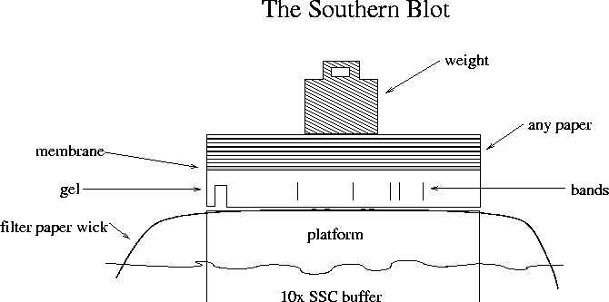

Day 5 Afternoon Lecture Notes
Steve Williams, Smith College
June 10, 2004
Different RevT genes from the family have sequences that are about 90% the same. When genes are copied from one part of the genome to another, they start to diverge evolutionarily. Most copies of RevT are non-functional "pseudogenes."
RevT codes for reverse transcriptase, which copies RevT to other places in the genome. RevT's tendency to copy itself explains why LINE1 has so many occurrences in the genome. Retroviruses may well be RevT genes that escaped from the host genome. "RevT is something like an endogenous retrovirus." If LINE1 by chance inserts into genes, it may cause a mutation in protein production.
GCTACGGGGCCCCTGTG
would likely fold in the center forming four G-C bonds and fail to hybridize with template DNA.
Forensic investigations use standard primers that hybridize to highly conserved DNA regions but which, taken as a pair, span highly variable regions. Some primer and software vendors: Molecular Biology Insights (including the Oligo program), DNAsis, LaserGene, IDT (Smith's provider) and the Primer3 program from MIT.
Design a 3rd nucleotide that hybridizes to the known sequence of the expected PCR product. Often this test is performed using a Southern blot: running a DNA gel, then transferring DNA to a membrane where hybridization with the probe is checked.

The buffer goes up the wick, through the gel, through the membrane and into the paper. DNA follows the buffer through the gel and onto the membrane, which it can't permeate. In so doing it moves purely vertically and stays registered with its position in the gel. The DNA transfer is always performed with the gel upside-down as the top surface is too wavy to make good contact to the membrane.
The DNA on the membrane can be UV-crosslinked on for attachment and then hybridized with a probe. The probe can be labeled with fluorescein or biotin. Any DNA in marker lanes will also be transferred to the membrane and will serve as a negative control for the hybridization. Oligos can be ordered with attached probes for added convenience. Any ethidium bromide left in the gel doesn't interfere with the hybridization. Hybridization of a probe to a Southern membrane should used high stringency since the method is intended to be a strict confirmation of earlier results.